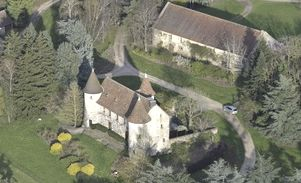
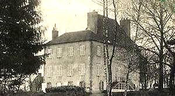
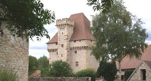
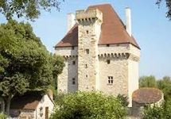
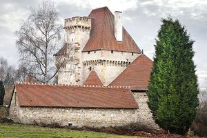
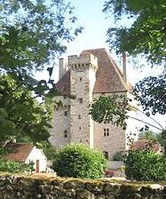
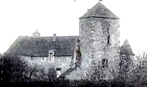

Recensement Jean-Claude Truffet
| Département | 03 — Allier |
| Canton | Montmarault |
| Commune | Doyet |
| Type d'édifice | Maison forte |
| Période d'origine | XV |







A Doyet quatre châteaux d'Ancinet du XVe siècle, de Chassignole du XV-XIXe siècles avec donjon, de la Souche du XVe siècle donjon enceinte et de Bord-Pechins du XVe siècle. ANCINET, le sieur d'Ancinet était vassal de la châtellenie d'Hérisson, le plus ancien possesseur connu serait un Raoul d'Ancinet. Au début du XVe siècle, le château passe à la famille de Chers, puis au XVIIe siècle, à Gilbert du Bois, écuyer seigneur d'Ancinet, du Coudray, du Bois. En 1697, Gilbert de Villars est seigneur d'Ancinet. A la révolution, ses tours et ses murs d'enceinte sont détruits, racheté en 1970 par M. Delbard il est maintenant restauré avec chambres d'hôtes. BORD-PECHINS, du XVe siècle,était le centre d'une seigneurie qui englobait plusieurs domaines et métairies. CHASSIGNOLE. Outre Gilbert de Courtais, le représentant le plus connu de cette famille est le fameux général du peuple, qui résida et finit ses jours à La Chassignole. inquiété sous le règne de Napoléon pour ses idées libérales, il devint maire de Doyet. A sa mort, ses biens passèrent à son neveu le vicomte Pailloux qui les légua à des établissements de charité. La Chassignole reveint à son parent, le Comte de Bodinat, dont les descendants sont les actuels propriétaires du lieu. SOUCHE, mariage d'Isabelle de La Souche avec Gilbert de Courteix. fief des ducs de Bourbon tenu par un damoiseau de ce nom qui passera par alliance à Jean de Murat seigneur de Beaumont et fait retour à la famille de la Souche. En 1505 Charles et Jean de la Souche et de Varennes entre dans la famille par une alliance avec les La Roche-Raoul. Au XVIIe siècle Isabeau de la Souche épouse en 1624 Gilbert de Courtais fils d'un gentilhomme de Charles de Lorraine, duc de Guise. Restera dans cette famille jusqu'à la fin du XIXe siècle, à la mort du dernier des cette lignée , la Souche passe par héritage au comte de Bodinat capitaine de cavalerie et le cède en 1900 à l'hospice de Lavault Sainte-Anne, et aujourd'hui la famille Roche mène à bien la restauration du château.
Ancinet, au XVe siècle, se dresse sur un monticule rocheux dominant la vallée de l'Oeil. Manoir de plan rectangulaire, flanqué de deux tours à l'angle nord et à l'angle ouest, et d'une tour d'escalier au milieu de la façade sud-est. Bord-Pechins, du XVe siècle, l'édifice d'architecture militaire est constitué de deux corps de logis enfermant une cour carrée, elle-même entourée de douves. pont-levis remplacé par un pont en dur. Une seconde série de douves enfermait l'ensemble à environ cent mètres du château. La tour d'entrée, aboutissement du pont, marque une séparation entre les deux parties du château. La partie nord comporte le corps de logis. Son extrémité ouest est formée par une tour rectangulaire. Accolée au sud-est du bâtiment une grosse tour carrée .
Chassignoles, au Moyen-Age, premier château sur la motte, système fortifié le château fort est cité en 1569, il n'en reste que quelques vestiges. L'actuelle résidence est constituée d'un corps de logis rectangulaire à deux étages, coiffé d'une haute toiture à quatre pans et complété par un bâtiment en retour d'équerre. Souche, du XVe siècle système fortifié complexe, englobant une enceinte extérieure flanquée de tours, ceignant une basse-cour et creusée d'une mare pavée circulaire servant de réserve d'eau au Moyen-Age. Cette enceinte était garnie à l'origine d'une entrée à pont-levis. Le château-donjon est doté d'une première enceinte plus réduite, flanquée de quatre tours circulaires entourant une braie et défendue par des douves à l'origine franchies par un pont-levis remplacé aujourd'hui par un ouvrage maçonné. En façade, une tourelle carrée demi hors oeuvre contient l'escalier à vis.
Famille de Chers Famille de Gilbert de Courtais"
Château d'Ancinet, de Bord Peschins, de Chassignoles et de la Souche à Doyet.